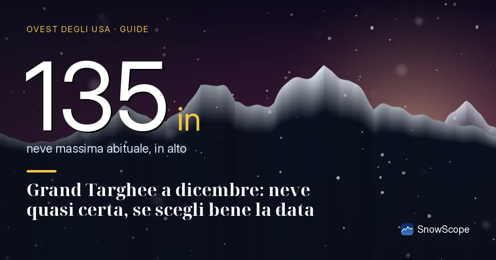

Grand Targhee a dicembre: neve quasi certa, se scegli bene la data
L'elevazione di metà montagna di Grand Targhee garantisce neve profonda a dicembre in quasi ogni inverno: 118 cm il 15 dicembre tipico, con ogni singolo inverno degli ultimi 46 anni che ha raggiunto almeno 50 cm. La vera decisione per il tuo portafoglio non è se la neve ci sarà, ma quale settimana prenotare.
Le previsioni neve in tempo reale per Grand Targhee Resort nell'app SnowScopeAltezza neve, allerte powder e mappa 3D, gratis.
Quanto profonda e quando
A metà montagna, intorno a 2.658 m, aspettati 81 cm il 1° dicembre, poi 118 cm entro il 15, e 131 cm a Natale. La vetta, vicino a 3.000 m, raggiunge 179 cm entro metà dicembre. Anche in un anno magro (un inverno su dieci), metà montagna mantiene comunque 79 cm il 15.
Inizio dicembre è una scommessa sicura: il 54% degli inverni ha buona neve la prima settimana. Entro la seconda settimana sale al 76%, e le settimane tre e quattro raggiungono l'89% e il 93%. La neve stabile di solito arriva a inizio ottobre, quindi la base è spessa quando arrivi.

Timing del prezzo dello skipass
Gli skipass giornalieri online vanno da $125 a $180 a seconda della data; il costo al banco è $10 in più. Il punto chiave è che le date di dicembre pre-vacanze si collocano all'estremità inferiore. L'area sciistica apre il 20 novembre e applica prezzi festivi dal 24 dicembre al 3 gennaio, quando paghi il massimo.
Rimangono quasi quattro settimane di inizio-metà dicembre a tariffe migliori. Gli skipass plurigiornalieri diventano più convenienti al giorno man mano che ne acquisti di più, quindi un viaggio di tre o quattro giorni distribuisce il costo ulteriormente. La convenienza favorisce la prenotazione online a inizio dicembre se il tuo programma lo consente.

Come si confronta con le zone vicine
Snow King, la collina della città di Jackson, costa $100 al giorno ma in media solo 71 cm a metà montagna il 15 dicembre, con buona neve nel 87% degli inverni. Accesso più economico, base più sottile.
Jackson Hole Mountain Resort, l'area più grande della valle, in media 93 cm a metà montagna alla stessa data. Sono 23 cm in meno di Targhee alla stessa quota. Per la neve di dicembre, Targhee supera entrambi.
Dove stare
Targhee si trova sopra Driggs dal lato Idaho dei Tetons. La maggior parte dei visitatori si basa a Driggs (più vicino e tranquillo) o Jackson (più scelta, ma oltre il Teton Pass). Il passo è ripido e chiude durante le tempeste, quindi controlla le condizioni prima di guidare.
Non abbiamo confrontato i costi dell'alloggio, ma il lato Idaho tende a offrire opzioni meno numerose ma più convenienti. Jackson ha più varietà a tutti i livelli di prezzo.
La neve è affidabile come prima?
Principalmente sì, ma con un leggero calo. Negli inverni dal 1980-81 al 1994-95, metà montagna in media 130 cm il 15 dicembre. Negli ultimi 15 inverni, è sceso a 102 cm. Eppure tutti gli inverni in entrambi i periodi sono rimasti sopra i 50 cm.
La scorsa stagione è stata scarsa, arrivando con soli 62 cm a metà dicembre a metà montagna. È sufficiente per sciare piste preparate, ma notevolmente più sottile dei tipici 118 cm. Inizio dicembre questa stagione è a soli 5 cm adesso, quindi la montagna si riempirà durante il mese.
Cosa portare
Dicembre a Targhee è freddo e in quota. La vetta della montagna si trova a 3.000 m e riceve neve costante. Porta strati base, una giacca impermeabile e occhiali per il vento. I pendii superiori rimangono sciabili bene nell'inizio della primavera grazie all'altitudine e all'accumulo totale.
Inizio dicembre può vedere cicli di gelo-disgelo sulle piste esposte a sud a metà montagna se il sole è forte. Scia più in alto o verso nord se vuoi neve costante. Entro metà dicembre, il freddo sostenuto blocca la base.
Consigli per sciatori
- Prenota le tue date di inizio dicembre online almeno due settimane prima per bloccare il prezzo dello skipass inferiore; le finestre al banco costano $10 in più e hanno meno certezza sulla disponibilità.
- Se pianifichi due o più giorni, acquista uno skipass plurigiornaliero o abbonamento: il costo al giorno scende significativamente rispetto agli skipass giornalieri.
- Scia a metà montagna o più in alto a inizio dicembre quando la base è sottile; i 150 m extra di elevazione fanno una differenza di 38–50 cm nella profondità della neve e nella stabilità.
- Prima di guidare da Jackson, controlla le condizioni del Teton Pass: chiude con neve abbondante e tempeste. Il lato Idaho è più ripido di quanto potresti aspettarti.
- Leggi il bollettino valanghe del Bridger-Teton Avalanche Center prima di sciare fuori pista, soprattutto su pendii ripidi esposti a nord dove si possono formare lastre dopo neve fresca.
Su questi numeri
Le altezze neve delle località sono la neve più alta sui pendii superiori alla data indicata; sono stime per un'area, non una misura in un punto. Le previsioni possono cambiare. Leggi sempre il bollettino valanghe ufficiale prima del fuoripista.
Bollettini valanghe ufficiali: Bridger-Teton Avalanche Center
Cita questo articolo
Per ricerca, didattica o stampa: numeri e grafici sono liberamente riutilizzabili con licenza CC BY 4.0 citando così.
SnowScope (2026), Grand Targhee a dicembre: neve quasi certa, se scegli bene la data, https://snowscope.app/blog/it/2026/11/grand-targhee-december-snow-and-ticket-prices.html, consultato il 2026-11-14
SnowScope (Atlas Labs). (2026, November 14). Grand Targhee a dicembre: neve quasi certa, se scegli bene la data. SnowScope snow reports. https://snowscope.app/blog/it/2026/11/grand-targhee-december-snow-and-ticket-prices.html
BibTeX
@misc{snowscope2026grandtargheedecembersnow,
author = {{SnowScope (Atlas Labs)}},
title = {Grand Targhee a dicembre: neve quasi certa, se scegli bene la data},
year = {2026},
month = nov,
howpublished = {\url{https://snowscope.app/blog/it/2026/11/grand-targhee-december-snow-and-ticket-prices.html}},
note = {Published 2026-11-14 13:57 UTC; accessed 2026-11-14}
}· CC BY 4.0 · Metodi, dati e strumenti →
Grand Targhee Resort: neve e temperatura per quota, quest'inverno vs lo scorso (strumenti) →
Segui Grand Targhee Resort
Gratis: un messaggio quando arriva la neve e il meteo ogni mattina.